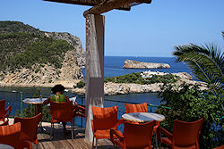

Cova de Can Marçà
Caves San Miguel
Useful Information
|  |
| Image: in front of the cave. Image by Jose Escandell, Cova de Can Marça. |
| Location: | North of the village Puerto San Miguel. |
| Open: |
MAY to OCT daily 11-13:30, 14:30-20, every 30min. NOV to APR daily 11-17:30, every 45min. [2011] |
| Fee: |
Adults EUR 8.50, Children (5-12) EUR 4.50. [2011] |
| Classification: |
 Karst cave Karst cave
|
| Light: | electric. |
| Dimension: | A=12m asl., T=20°C. |
| Guided tours: | D=40min. |
| Photography: | |
| Accessibility: | |
| Bibliography: | |
| Address: |
Cova de Can Marçà, 07815 Port de Sant Miguel, Tel: +34-971334776, Fax: +34-971334615.
E-mail: |
| As far as we know this information was accurate when it was published (see years in brackets), but may have changed since then. Please check rates and details directly with the companies in question if you need more recent info. |
|
History
| 1970 | explored by the Belgian speleologist Jean-Pierre van der Abeelle. |
Description
 |
| Image: rimstone pools with coloured light. Image by Jose Escandell, Cova de Can Marça. |
Located at the bay of Puerto San Miguel the cave entrance of Cova de Can Marçà is only about 12m asl. The tour crosses the through cave and leaves on the other side at a height of about 40m asl. This exit offers an impressive view across the bay to the Murada island. The building on this island was once the home of , but today it is a secluded holiday retreat for many famous people.
 |
| Image: cave formations. Image by Jose Escandell, Cova de Can Marça. |
The cave is nice karst cave with many formations. There are cave corals and rimstone pools. But this cave is very dry, and so the rimstone pools are dried out. To offer the tourists some kind of atrraction the owners created a system of pipes and pumps and reactivated a small waterfall and the pools. The water starts to flow right when the tours arrive, activated by the guide. They use water dyed with fluorescine, which gives a really alien green colour to the pools. Most visitors are impressed by this sight, but many find it kitchy, while several are exasperated by the sacrilege done to the fine speleothems. We do not know about animals in the cave, but we guess the coloured water is not really good for them. Also the colour will stain the speleothems.
Despite the conservation issues, this cave seems to be the finest and best promoted show cave of Ibiza. It has fine speleothems and a history of smuggler, which used the cave. Obviously in the explanations of the cave guides they were dubbed pirates, which sound much better. They are said to have opened the upper entrance, by digging out the filing cave sediments. It was their secret rear door, for cases of emergency. Red or black paint marks on the cielings were made by them, to help orientate in the cave. At this time most of the cave was too low to walk upright. The floor was deepened when the cave was developed.
 |
| Cova de Can Marçà Gallery |
 Search Google for "Cova de Can Marçà"
Search Google for "Cova de Can Marçà" Google Earth Placemark
Google Earth Placemark .: Cova de Can Marça :.
(visited: 14-FEB-2011)
official website.
.: Cova de Can Marça :.
(visited: 14-FEB-2011)
official website.